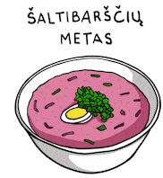

Cold Beetroot Soup Recipe

Description
Cold beetroot soup has a shocking bright pink colour due to the natural beetroot juice and an incredibly fresh taste due to the most important ingriedent in the cold soup – kephir, recognized by nutritionists as one of the healthiest products in the world.
Ingredients
- 4 large eggs
- 1 quart buttermilk
- 1 pound beets, peeled and shredded
- 1 large English cucumber - peeled, quartered, and sliced
- 1 bunch fresh dill, minced
- ¼ cup minced chives
Steps
- Place eggs into a saucepan in a single layer and cover with water by 1 inch. Cover the saucepan and bring to a boil. Remove from the heat and let eggs stand in hot water for 15 minutes. Drain, then run under cold water to cool.
- Peel and chop eggs; place into a large bowl. Add buttermilk, beets, cucumber, dill, and chives; stir gently to combine. Chill in the refrigerator for 24 hours before serving.
Homepage